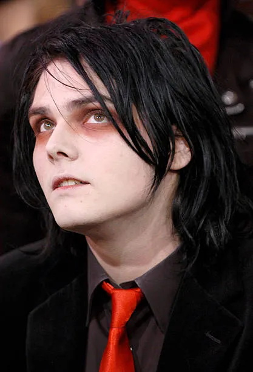
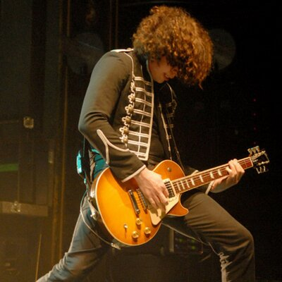
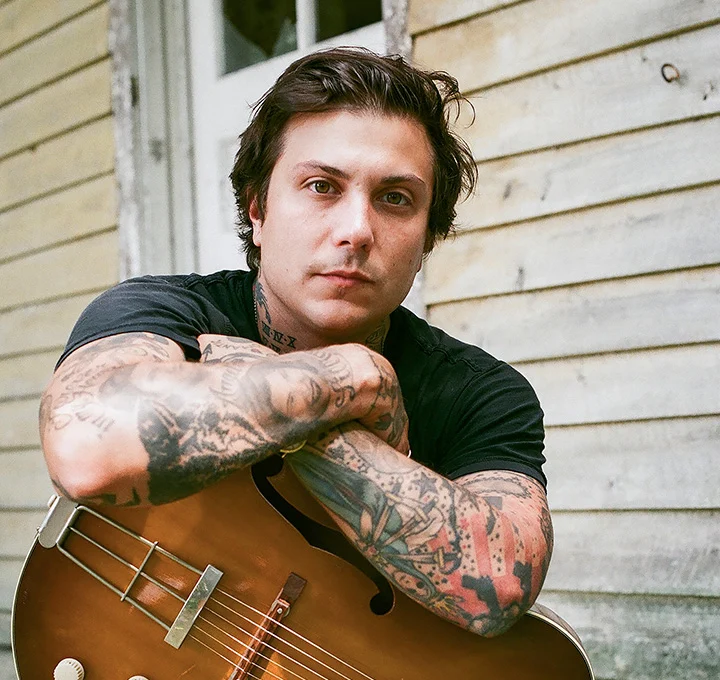
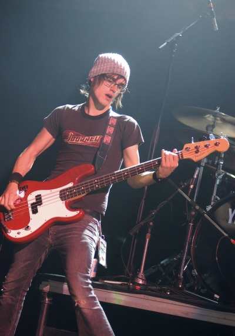

My Chemical Romance — це більше ніж сума їхніх інструментів. Це союз художників, активістів та музикантів, які разом створили унікальний візуальний та звуковий стиль.

Роль: Вокал, концептуальне бачення, візуальний стиль.
Про нього: Засновник гурту та автор більшості його ідей. До створення MCR Джеррард планував стати
художником коміксів. Його театральність та емоційна подача стали візитною карткою гурту. Саме він
малював обкладинки та створював ескізи костюмів для кожної епохи.

Роль: Соло-гітара, бек-вокал.
Про нього: «Музичний мозок» та технічне серце гурту. Рей відповідальний за складні гітарні партії та
гармонії, що наближають звучання MCR до класичного року та металу. Його називають миротворцем колективу
та головним архітектором їхнього студійного звуку.

Роль: Ритм-гітара, бек-вокал.
Про нього: Наймолодший учасник, який приєднався до гурту безпосередньо перед записом першого альбому.
Френк приніс у MCR панківську енергію та хаос. Його агресивний стиль гри та нестримна поведінка на сцені
стали ідеальним контрастом до технічності Рея.

Роль: Бас-гітара.
Про нього: Молодший брат Джеррарда. Саме Майкі вигадав назву гурту, побачивши книгу Ірвіна Велша
«Ecstasy: Three Tales of Chemical Romance». Він навчився грати на басу спеціально для того, щоб стати
частиною гурту. Майкі пройшов величезний шлях від сором’язливого юнака в окулярах до впевненої
рок-зірки.